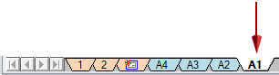

Replace background sheets
You can replace the contents of one or more background sheets in an open draft document. The new background sheets can be different names, sizes, and standards than the sheets you are replacing.
-
Right-click a background sheet that you want to replace and choose Replace Background .

-
In the Replace Background dialog box, click Browse to locate the draft document (*.dft) that contains the background sheets whose contents you want to use.
The default folder is set to the Solid Edge Template folder, but you can choose any draft file as your source.
-
In the Open a File dialog box, select the file and click Open.
All of the background sheets in the selected file are listed in the Replace Background dialog box. If any of the sheet names match the active background sheet tab, then the matching sheet name is highlighted in the list.
-
Select one or more background sheet names that you want to copy to the open draft document and click OK. The background sheet names do not have to match.
If there is a one-to-one match between background sheet names in both documents, then the contents are copied and the dialog box closes. If there are differences in sheet name or sheet size, then a series of decision dialogs are displayed. Click Yes or No at each prompt to specify how you want to resolve the differences.
Note:In the following messages, the term source refers to the draft template or other document that you chose as the source of the new backgrounds. The term selected refers to the open draft document containing the sheets you are replacing.
Example:In this example, the current document contains three background sheets (A1-Sheet, A2-Sheet, A3-Sheet). You selected the command from the A1-Sheet tab, and then you browsed to a template file with four background sheets (A1-Sheet, A2-Sheet, A3-Sheet, and A4-Sheet).
-
To replace the contents of the selected A1-Sheet sheet with the contents of the A2-Sheet, select A2-Sheet from the Replace Background dialog box and click OK. In each of the following message dialogs, click Yes.
Example:Source sheet name 'A2-Sheet' is different than the selected sheet 'A1-Sheet'. Do you want to copy?
Source sheet 'A2-Sheet' size is different than the selected sheet 'A1-Sheet'. Do you want to copy?
The contents of the current A1-Sheet background are replaced with the contents of the selected A2-Sheet background.
-
To replace the contents of all of the background sheets in the current document, select all of the sheets listed in the Replace Background dialog box and click OK. In the following message dialog, click Yes.
Example:'A4-Sheet' is not found in selected draft file Pipe-patternedhex-8.dft. Do you want to insert?
The contents of A1-Sheet, A2-Sheet, and A3-Sheet are copied to the corresponding background sheets. The A4-Sheet is inserted into the current file as a new background sheet.
-
Objects copied into the current document may look different than they do in the file from which you copied them. For example, the dimension font style or text size may be different, or the line thickness used to draw geometry is different. This is because styles of the same name but with different properties were not copied along with the background sheets. You can use the Style Organizer dialog box to manage the copied styles. For more information, see Applying formats with styles.
How do I
Display background sheetsEdit a background sheet
Attach a background sheet
Learn more
Background sheetsLook up more details
Background Sheets commandReplace Background command